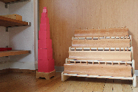
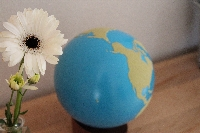
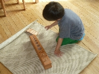

Matériel sensoriel
« Ce que tu ne comprends pas dans ton corps, tu ne le comprendras jamais »
C’est un matériel bien adapté aux différentes périodes sensibles de l’enfant. Il regroupe les mathématiques, le langage, la musique et la géographie.
Le matériel sensoriel permet la construction de l’intelligence. En effet, l’expérience cognitive passe par l’expérience sensorielle.
Il y a deux étapes dans le développement des enfants selon leur âge :
- De 0 à 3 ans, l’enfant absorbe le monde de façon inconsciente et c’est par ses sens qu’il perçoit le monde extérieur.
- De 3 à 6 ans, les informations recueillies pendant la première période s’ordonnent, se structurent, se classifient. Les mains servent à appréhender le matériel et les sens à appréhender les images du monde. Ce sont des outils fondamentaux à la construction et à la structuration de la personne.
Le matériel sensoriel ordonne, classifie, distingue, précise et généralise les perceptions ainsi que les sensations.


